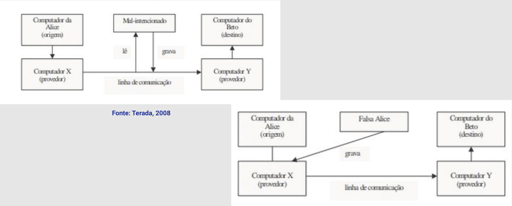
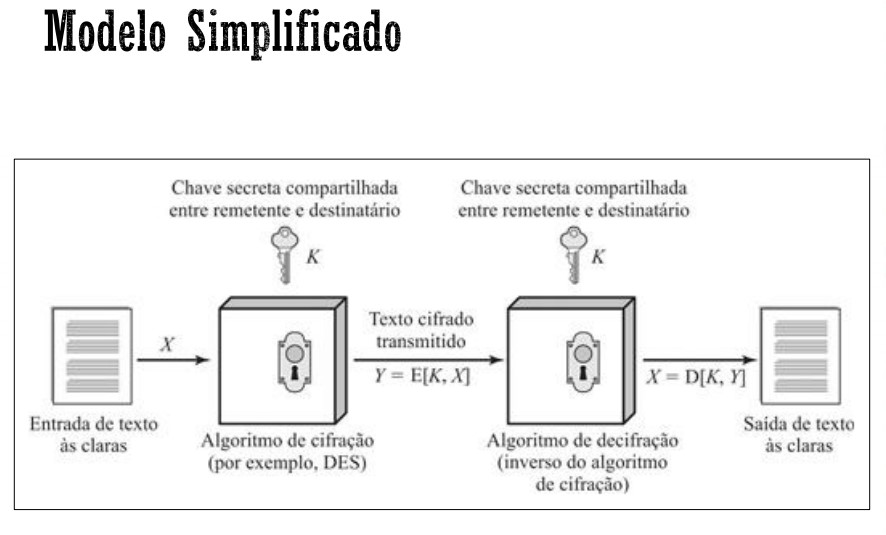
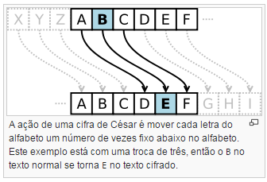
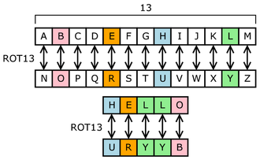

Disciplinas
Segurança da Informação. Concluído
Materiais
[UFMS Digital] Segurança da Informação - Módulo 2 - Unidade 1
Prof° ministrante: Dionisio Machado Leite Filho.
Introdução.
Sistemas de comunicação como a Internet são controlados por computadores em rede, pelos quais a informação trafega desde a origem onde ela está armazenada ou foi criada até o destino onde o solicitante da informação se encontra.
Muitas vezes há mais de um computador que repassa a informação entre a origem e o destino, principalmente quando estão geograficamente distantes.
Problemas de sigilo e autenticidade
Modelos de modificação de informação.

...
Criptografia.
Algoritmos criptográficos basicamente objetivam esconder informações sigilosas de qualquer pessoa desautorizada a lê-las, isto é, de qualquer pessoa que não conheça a chamada chave secreta de criptografia.
Conjunto de princípios e técnicas para cifrar a escrita, torná-la ininteligível para os que não tenham acesso às convenções combinadas.
Criptografia simétrica.
- Também chamada de criptografia convencional ou criptografia de chave única;
- Remetente e destinatário compartilham uma chave comum;
- Todos os algoritmos de criptografia clássicos são chaves privadas;
- Antes da criação da chave pública, nos anos 1970, era o único tipo de criptografia em uso;
- Esse continua sendo, de longe, o mais usado dos dois tipos de criptografia.
Termos básicos.
- Texto claro: mensagem ou dados originais
- Texto cifrado: mensagem embaralhada, produzida como saída.
- Cifra – algoritmo para transformar texto claro em cifrado;
- Chave – informação usada na cifra, conhecida somente pelo remetente e pelo destinatário;
- Cifrar (criptografar) - converter texto claro em cifrado;
- Decifrar (decriptografar) – recuperar um texto claro a partir do texto cifrado.
- criptografia – estudo dos princípios e métodos da criptografia;
- criptoanálise (quebra de código) – estudo dos princípios e métodos para decifrar um texto criptografado sem o conhecimento da chave;
- criptologia – abrange as áreas de criptografia e criptoanálise.
Modelo de chave simétrica.

Requisitos.
Há dois requisitos para o uso seguro da criptografia convencional: um algoritmo de criptografia forte e uma chave secreta conhecida somente pelo emissor e pelo receptor;
- Matematicamente, temos:
- Y = EK(X)
- X = DK(Y)
- pressupõe que o algoritmo de criptografia seja conhecido;
- implica um canal seguro de distribuição de chave.
Caracterização.
- Um sistema de criptografia é caracterizado por:
- Tipo de operações de criptografia usadas:
- substituição / transposição / produto;
- Número de chaves usadas:
- Chave única ou privada / duas chaves ou chave pública;
- Modo pelo qual o texto claro é processado:
- bloco / fluxo.
Criptoanálise.
- Tem por objetivo a recuperação da chave, além da mensagem;
- Técnicas gerais:
- Ataque criptoanalítico;
- Apenas texto cifrado:
- somente algoritmo e texto cifrado conhecidos, é estatístico, conhece ou pode identificar texto claro;
- Texto claro conhecido:
- texto claro e texto cifrado conhecido/suspeito;
- Texto claro escolhido:
- seleciona o texto claro e obtém texto cifrado.
- Texto cifrado escolhido:
- seleciona texto cifrado e obtém texto claro;
- Texto escolhido:
- seleciona o texto claro ou cifrado para criptografar ou descriptografar.
- Ataque por força bruta.
Cifras de substituição clássicas.
Em que as letras de texto claro são substituídas por outras letras ou por números ou símbolos;
Texto claro for visto como uma sequência de bits, então a substituição envolve substituir padrões de bits de texto claro por padrões de bits de texto cifrado.
Cifra de César
- Cifra mais antiga de que temos conhecimento;
- Usada primeiramente para fins militares;
- Substitui cada letra pela que fica três posições adiante no alfabeto;
- Exemplo:
- MEET ME AFTER THE TOGA PARTY
- PHHW PH DIWHU WKH WRJD SDUWB
- Matematicamente, dá a cada letra um número:
- a b c d e f g h i j k l m n o p q r s t u v w x y z
- 0 1 2 3 4 5 6 7 8 9 10 11 12 13 14 15 16 17 18 19 20 21 22 23 24 25
- os algoritmos de César são:
- c = E(p) = (p + k) mod (26)
- p = D(c) = (c – k) mod (26)

- Não somente desloca o alfabeto;
- Poderia embaralhar as letras arbitrariamente;
- Cada letra de texto claro mapeia para uma letra de texto cifrado aleatória;
- Assim a chave pode ter até 26 letras de extensão;
- Exemplo: texto plano: “Um texto a ser cifrado”
- chave: “cifra”
- Umtextoasercifrado
- cifracifracifracifraci